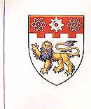

Agent Claws Distributed AATW
（多重影分身の術）🥷
Terry Pei
I am a Visiting Graduate Researcher at the University of California, Los Angeles (UCLA), hosted by Prof. Cho-Jui Hsieh, and a PhD candidate in Computer Science at the University of Sydney, supervised by Prof. Chang Xu. I also work closely with Assistant Professor Tao Huang at Shanghai Jiao Tong University.
My previous research focuses on pretraining foundation models from scratch at the billion-parameter level, with emphasis on scalable training pipelines and efficiency-oriented inference.
My current research interests include:
- (1) Stage-1 (Alignment), Stage-2 (SFT), and Stage-3 Paradigm for Foundation Model Training;
- (2) Efficient Vision-Language Models;
- (3) Foundation Models for Autonomous Driving;
- (4) World Models.
Email: xiaohuan.pei [AT] sydney [DOT] edu.au
Alt: terrypei123 [AT] gmail [DOT] com
Email /
Scholar /
GitHub /
LinkedIn /
Instagram
News
- [2026] Three papers accepted at ICLR 2026. 🎉🎉🎉
- [2026] Visiting graduate researcher at UCLA.
- [2025] One paper accepted at AAAI 2025. 🎉
Earlier News
- [2024] One paper accepted at ICLR 2024. 🎉
- [2024] One paper accepted at ECCV 2024. 🎉
- [2024] Guest Lecture on Artificial Intelligence at the University of Sydney.
- [2022] ICDM Best Student Paper Award.
- [2022] Two papers accepted at ICDM 2022.
|
Previous Work
|
Action-aware Dynamic Pruning for Efficient Vision-Language-Action Manipulation
Xiaohuan Pei*, Yuxing Chen*, Siyu Xu, Yunke Wang, Yuheng Shi, Chang Xu
real-robot rollouts · action trajectory as condition
VLAefficient inferencereal robot
GroundFlow: Efficient Post-Training for Fine-Grained Multimodal Foundation Models
Xiaohuan Pei, Jiyuan Zhang, Yuanfan Guo, Weiguo Feng, Yuheng Shi, Tao Huang, Chang Xu, Cho-Jui Hsieh
“efficient post-training directly on corrected hidden states”
VLMpost-training
new training paradigm
Differentiable Efficient Operator Search
Xiaohuan Pei, Jiyuan Zhang, Yuanfan Guo, Weiguo Feng, Tao Huang, Cho-Jui Hsieh, Chang Xu
“human-designed efficiency → a differentiable search space” VLMoperator searchefficient inference
Self-Distilled RoI Predictors for Fine-Grained MLLM Perception
Yuheng Shi, Xiaohuan Pei, Minjing Dong, Chang Xu
“let the MLLM teach itself where to look” VLMfine-grained perception
Light Future-aware Masking for Vision-Language Inference
Xiaohuan Pei, Tao Huang, Yanxiang Ma, Chang Xu
“do we really need left-to-right causal design on visual attention?”
Cross-Self KV Cache Pruning for Efficient Vision-Language Inference
Xiaohuan Pei, Tao Huang, Chang Xu
“KV cache pruning should respect the modality difference: cross-modal keys ≠ self-modal keys” VLMKV cacheefficient inference
EfficientVMamba: Atrous Selective Scan for Light Weight Visual Mamba
Xiaohuan Pei, Tao Huang, Chang Xu
“atrous selective scan makes visual state-space models lightweight” efficient architecturebackbone
|
Close Collaborators
I am grateful for the privilege of collaborating with a group of talented and dedicated collaborators. Working alongside you has been both an honor and a delightful experience.
Academic:
A/Prof. Tao Huang (SJTU)·
RA/Prof. Yanxi Li (NTU  )·
A/Prof. Minjing Dong (CityU)·
PhD student Yuheng Shi (USYD)
Industry:
Researcher Pichao Wang (NVIDIA )·
Foundation Model Engineers Jiyuan Zhang, Yuanfan Guo, Weiguo Feng (ByteDance )·
Foundation Model Engineers Jiyuan Zhang, Yuanfan Guo, Weiguo Feng (ByteDance ) )
Publications
(10+ papers · 7 published as first / co-first author)
[C] Conference; [P] Preprint
Selected Publications
- 2026
[ICLR'26] Action-aware Dynamic Pruning for Efficient Vision-Language-Action Manipulation
Xiaohuan Pei*, Yuxing Chen*, Siyu Xu, Yunke Wang, Yuheng Shi, Chang Xu
[C] International Conference on Learning Representations (CORE Rank A*)
[paper] [code] [project]
-
[ICLR'26] Self-Distilled RoI Predictors for Fine-Grained MLLM Perception
Yuheng Shi, Xiaohuan Pei, Minjing Dong, Chang Xu
[C] International Conference on Learning Representations (CORE Rank A*)
[paper] [code]
-
[ICLR'26] Light Future-aware Masking for Vision-Language Inference
Xiaohuan Pei, Tao Huang, Yanxiang Ma, Chang Xu
[C] International Conference on Learning Representations (CORE Rank A*)
[paper] [code]
- 2025
[AAAI'25] EfficientVMamba: Atrous Selective Scan for Light Weight Visual Mamba
Xiaohuan Pei, Tao Huang, Chang Xu
[C] AAAI Conference on Artificial Intelligence (CORE Rank A*)
[paper] [code]
- 2024
[ICLR'24] Neural Architecture Retrieval
Xiaohuan Pei, Yanxi Li, Minjing Dong, Chang Xu
[C] International Conference on Learning Representations (CORE Rank A*)
[paper] [code]
-
[ECCV'24] LocalMamba: Visual State Space Model with Windowed Selective Scan
Tao Huang, Xiaohuan Pei, Chang Xu
[C] European Conference on Computer Vision (CORE Rank A*)
[paper] [code]
Other Publications
- 2024
[Preprint] Cross-Self KV Cache Pruning for Efficient Vision-Language Inference
Xiaohuan Pei, Tao Huang, Chang Xu
[P] arXiv:2412.04652
[paper] [code]
- 2023
[Preprint] GPT Self-supervision for a Better Data Annotator
Xiaohuan Pei, Yanxi Li, Chang Xu
[P] arXiv:2306.04349
[paper]
-
[Preprint] Text-driven Neural Architecture Embeddings and Retrieval
Xiaohuan Pei, Yanxi Li, Minjing Dong, Chang Xu
[P] Preprint
- 2022
[ICDM'22] Contrastive Code-Comment Pre-training
Xiaohuan Pei, Daochang Liu, Qian Luo, Chang Xu
[C] IEEE International Conference on Data Mining (CORE Rank A*)
-
[ICDM'22] Self-attention Gated Cognitive Diagnosis for Faster Adaptive Educational Assessments
Xiaohuan Pei, Shuo Yang, Jiajun Huang, Chang Xu
[C] IEEE International Conference on Data Mining (CORE Rank A*)
Selected Honors and Awards
ICDM Best Student Paper Award
IEEE
Full Scholarship Award (x2)
University of Sydney
Outstanding Graduate
National Second Prize
Mathematics Competition
Provincial Prize
C++ Programming Competition
- ICDM Best Student Paper Award, IEEE
- Full Scholarship Award (x2), University of Sydney
- Outstanding Graduate
- National Second Prize in Mathematics Competition
- Provincial Prize in C++ Programming Competition
- NCI Adapter Scheme Grant, National Computational Infrastructure, Australia
Professional Services
- Reviewer: TPAMI, ICML, NeurIPS, ICLR, CVPR, ICCV, KDD, ICDM
Teaching Experience
- Guest Lecture, Artificial Intelligence, The University of Sydney, 2024
- Tutor, COMP5329 Deep Learning, The University of Sydney, 2023, 2025
|
|


{kind=link}